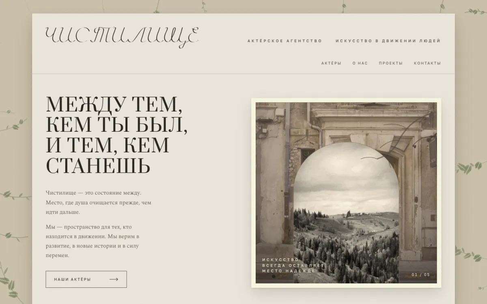
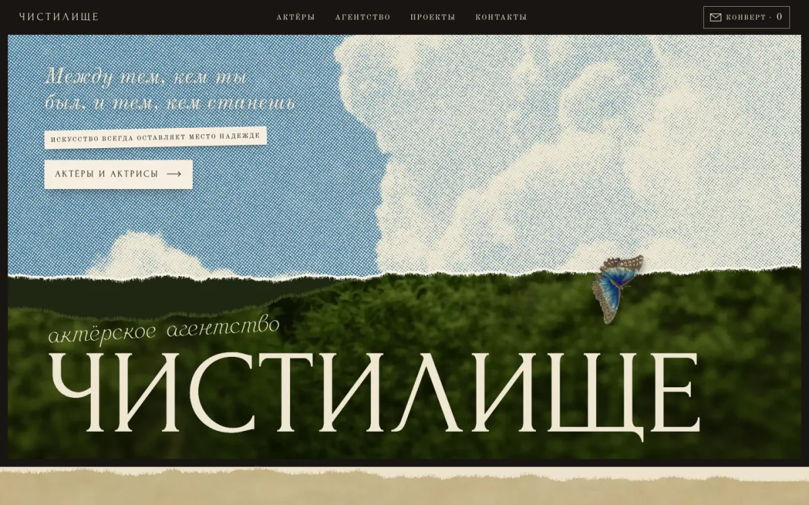
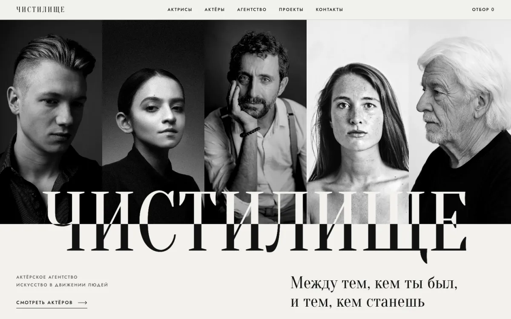

Чистилище
Сайт актёрского агентства · черновик на обсуждение · 27 сентября 2026
Три варианта сайта
Три разных взгляда на один сайт. Все три рабочие: их можно листать, открывать карточки актёров, отбирать и собирать запрос. Посмотрите каждый и скажите, какой ближе — или что взять из разных.
-

Гербарий
По первому мудборду — доработанный прототип
Пергамент и сепия, фото в паспарту. Гербарий на полях расцветает по мере прокрутки. Кнопка «Аа» внизу — можно самой переключить шрифты, бумагу и акцент.
Открыть вариант 1 -

Небо
По новому мудборду
Коллаж старой печати: растровое небо рвётся над мхом, актёры — на кабинет-карточках, принципы агентства — на таблице превращения Мериан. Понравившихся можно откладывать «в конверт» и сразу писать запрос.
Открыть вариант 2 -

Крупный план
Мой вариант — после разбора 18 западных агентств
Лица в масштабе экрана, как у модного дома: чёрно-белые портреты и русская дидона. В указателе наведите на имя — зал темнеет и за списком проступает лицо. Фильтр набран фразой, отобранные копятся в «Отборе».
Открыть вариант 3
Как оставить комментарий
- Откройте вариант — переключаться между ними можно кнопкой «Вариант» внизу справа.
- Замечания присылайте сообщением — можно со скриншотом.
Во всех вариантах актёры вымышленные, фото временные, со стока, проекты и контакты — примеры. Всё в пунктирной рамке — заглушка.
Три вопроса к вам
- Сколько актёров в агентстве сейчас и сколько планируется? До пятнадцати — хватит витрины. Больше пятидесяти — нужен полноценный каталог с поиском и отдельными страницами.
- Есть ли у актёров профессиональные фотосессии? Сайт держится на портретах. Если снимки разные по свету, заложим единую обработку.
- Кто будет обновлять сайт? Если вы сами — сделаем простую таблицу, из которой сайт берёт актёров.